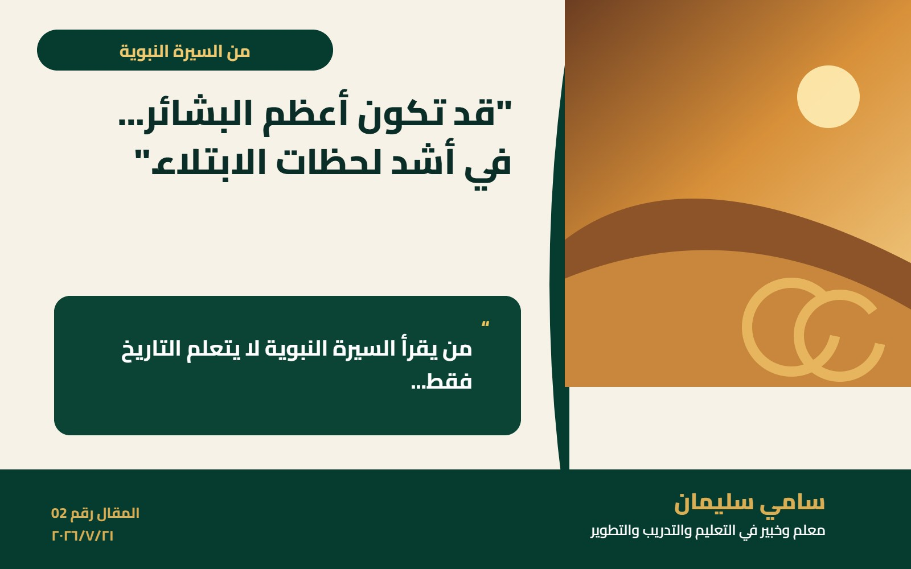

موقع سامي سليمان
قد تكون أعظم البشائر... في أشد لحظات الابتلاء
من يقرأ السيرة النبوية لا يتعلم التاريخ فقط، بل يتعلم كيف يصنع الأمل.
قراءة المقال
موقع سامي سليمان
من يقرأ السيرة النبوية لا يتعلم التاريخ فقط، بل يتعلم كيف يصنع الأمل.
قراءة المقال